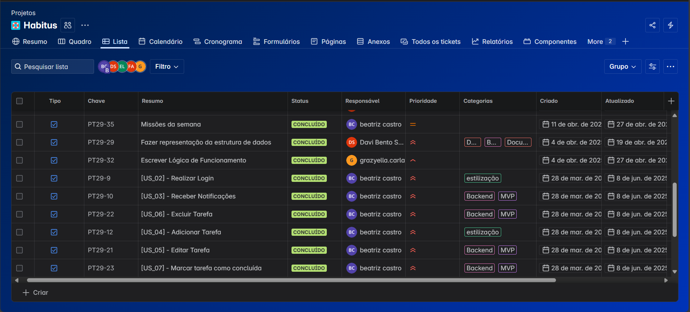

Sobre o projeto
O habitus foi uma aplicação web de lista de tarefas gamificada, desenvolvida em parceria com o Banco do Brasil e o Porto Digital. O projeto teve destaque no Demoday e foi construído com foco em usabilidade e engajamento.
Levantamento de requisitos
Iniciando pelo Levantamento de requisitos, utilizamos o jira para a gestão do projeto, definindo um MVP em acordo com a empresa e requisitos desejáveis ou para adaptação futura.
Stack de desenvolvimento

Banco de dados
O banco de dados foi projetado com a ferramenta NAVICAT, e pensado com o usuário no centro. Para gerenciamento do banco de dados utilizamos o knex com migrations para popular o banco para testes, e alterações que vieram a seguir. É possível encontrar mais detalhes sobre o banco de dados no repositório do github do projeto.
Ver no GitHub